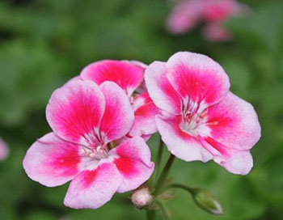
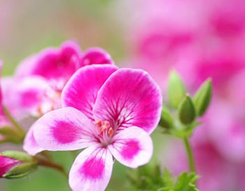
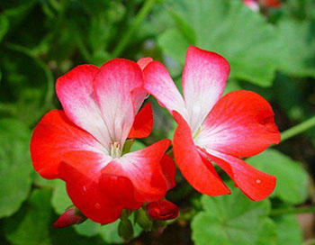

当前位置：首页>花卉介绍>天竺葵
天竺葵
天竺葵（学名：Pelargonium hortorum ），别名洋绣球、石腊红、入腊红、日烂红、洋葵，属牻牛儿苗科，包括约230种多年生肉质、亚灌木或灌木植物。天竺葵原产非洲南部，世界各地普遍栽培。
天竺葵幼株为肉质草本，老株半木质化；在西方是很好的装饰窗台的花卉，在欧洲大陆，如德奥等国，尤为常见。
多年生草本，高30-60厘米。
茎直立，基部木质化，上部肉质，多分枝或不分枝， 具明显的节，密被短柔毛，具浓裂鱼腥味叶互生；托叶宽三角形或卵形，长7-15毫 米，被柔毛和腺毛；叶柄长3-10厘米，被细柔毛和腺毛；叶片圆形或肾形，茎部心形， 直径3-7厘米，边缘波状浅裂，具圆形齿，两面被透明短柔毛，表面叶缘以内有暗红色 马蹄形环纹。
伞形花序腋生，具多花，总花梗长于叶，被短柔毛；总苞片数枚，宽卵形； 花梗3-4厘米，被柔毛和腺毛。芽期下垂，花期直立；萼片狭披针形，长8-10毫米， 外面密腺毛和长柔毛，花瓣红色、橙红、粉红或白色，宽倒卵形，长12-15毫米，宽6- 8毫米，先端圆形，基部具短爪，下面3枚通常较大；子房密被短柔毛。
蒴果长约3厘米， 被柔毛。花期5-7月，果期6-9月。
天竺葵性喜冬暖夏凉，冬季室内每天保持10-15℃，夜间温度8℃以上，即能正常开花。但最适温度为15-20℃。天竺葵喜燥恶湿，冬季浇水不宜过多，要见干见湿。土湿则茎质柔嫩，不利花枝的萌生和开放；长期过湿会引起植株徒长，花枝着生部位上移，叶子渐黄而脱落。
天竺葵生长期需要充足的阳光，因此冬季必须把它放在向阳处。光照不足，茎叶徒长，花梗细软，花序发育不良；弱光下的花蕾往往花开不畅，提前枯萎。天竺葵不喜大肥，肥料过多会使天竺葵生长过旺不利开花。
地理分布
中国各地普遍栽培。原产非洲南部。
在1600年之前被一艘停靠过好望角的船只带回荷兰莱顿的植物园。1631年，英国园艺家John Tradescant从巴黎的Rene Morin购买种子并引进这种植物到英格兰。
图集
